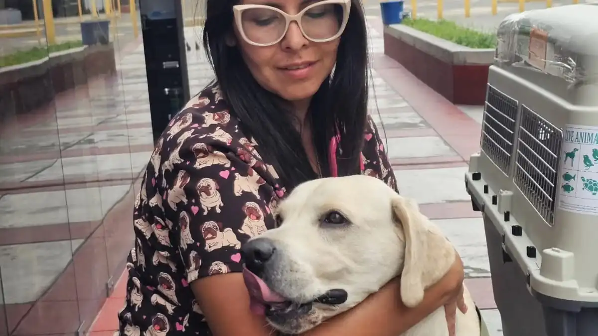
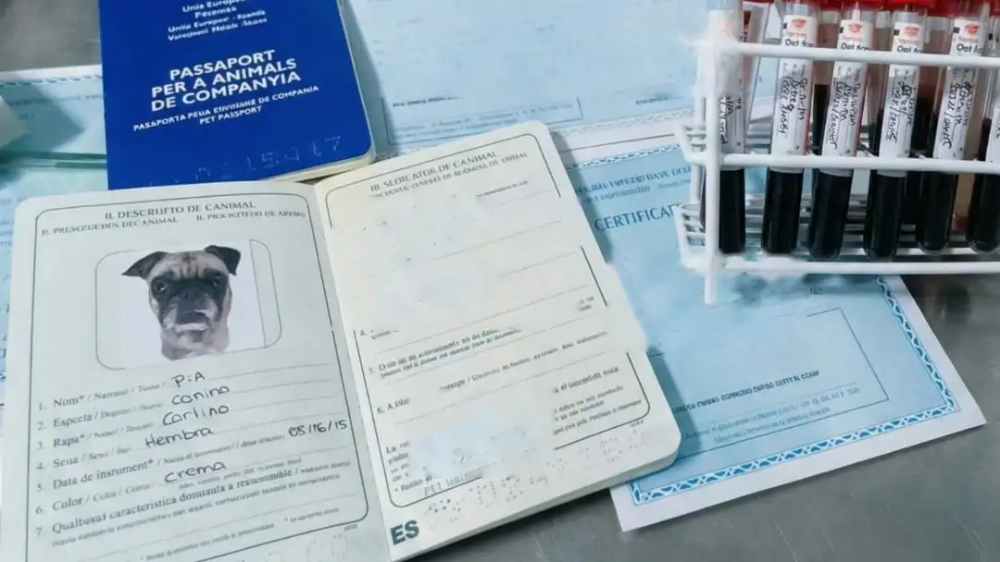
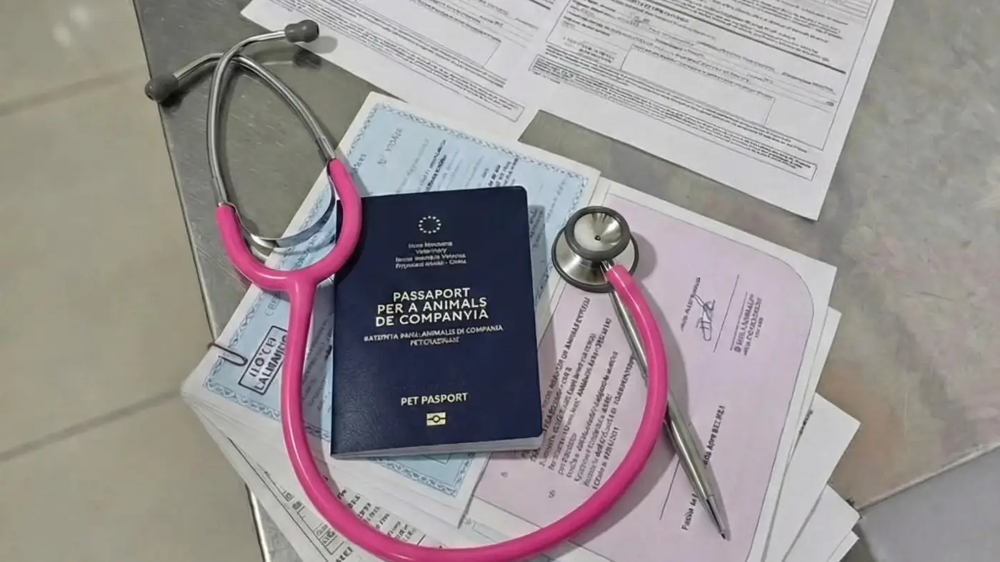
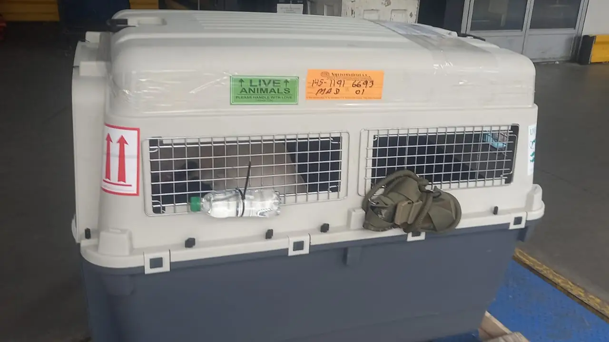

Tres meses no son noventa días. Según el mes, son 89, 90, 91 o 92. Durante once años esa diferencia dio igual, porque tres papeles oficiales contaban hasta tres fechas distintas. Desde el 22 de abril de 2026 hay una sola cuenta, y conviene saber cuál es antes de comprar el pasaje.

La prueba de anticuerpos de la rabia debe tomarse ahora al menos noventa días antes de la fecha en que se firma el certificado con el que el animal entra a la Unión Europea.
Antes se decía «tres meses», y según qué papel oficial leyeras, esos tres meses se contaban hasta el viaje, hasta la firma del certificado o hasta la llegada. Tres respuestas distintas para la misma regla.
La respuesta corta. Le sacan sangre a tu perro un día. Desde ese día cuentas noventa días. Cuando se cumplen los noventa, el veterinario ya puede firmar el certificado; antes, no. El vuelo va después de la firma, dentro de los diez días que ese certificado dura.
La norma anterior decía «tres meses». Y tres meses de calendario no son noventa días: son 89, 90, 91 o 92, según el mes en que te sacaron la sangre. En catorce de los veinticuatro meses de 2026 y 2027 son 92. En febrero son 89: un día menos de los que hoy exige la norma.
Esa es toda la diferencia. Y es la que hacía que dos veterinarios igual de honestos contaran distinto sin que ninguno estuviera mintiendo.
Imagina un perro que sale de Lima a Madrid. Su historia es la de siempre: microchip, vacuna antirrábica, y treinta días después el análisis de sangre que mide si esa vacuna funcionó. Ese análisis se llama titulación de anticuerpos —FAVN—, y no lo hace cualquier laboratorio: tiene que ser uno de los que la Unión Europea tiene designados.
Digamos que le sacan la sangre el 1 de marzo de 2026. Con la regla de hoy, la cuenta es de una sola línea:
Ahora la misma sangre con la regla anterior. Tres meses desde el 1 de marzo son el 1 de junio: 92 días, porque marzo tiene 31, abril 30 y mayo 31. Dos días más que noventa.
¿Y eso a quién le importa? A quien tiene el vuelo comprado. Porque durante once años, mientras el reglamento decía que los tres meses se contaban hasta el desplazamiento, un veterinario podía firmar el certificado el 28 de mayo —día 88— para un vuelo del 1 de junio, y estar cumpliendo. Con la redacción de hoy, ese mismo certificado firmado el día 88 no vale: la cuenta termina en la firma, no en el despegue.
Y el caso inverso, que sorprende más. A un perro al que le sacan sangre el 1 de febrero de 2027, tres meses le dan el 1 de mayo —solo 89 días—. Hoy no le alcanza: su certificado no puede firmarse hasta el 2 de mayo. «Tres meses» no siempre es más generoso que noventa días. En febrero es un día más corto.

Esto es lo que no habíamos visto contado en ninguna parte, y es la razón por la que medio continente sigue contando de formas distintas sin que nadie esté equivocándose del todo.
Hasta el 21 de abril de 2026, la misma regla estaba escrita en tres documentos oficiales. Con tres finales distintos.
Uno. El reglamento. El Reglamento (UE) 576/2013, anexo IV, en su versión consolidada de 2024:
«debe llevarse a cabo con una muestra recogida al menos treinta días después de la fecha de vacunación y: i) no menos de tres meses antes de la fecha: — del desplazamiento sin ánimo comercial desde un territorio o tercer país distinto de los enumerados…»Reglamento (UE) 576/2013, anexo IV, punto 2, letra a), inciso i)
Tres meses hasta el viaje.
Dos. La casilla del certificado que firmaba el veterinario, en el modelo que fijó el Reglamento (UE) 2019/1293:
«…un mínimo de treinta días después de la vacunación anterior y al menos tres meses antes de la fecha de expedición del presente certificado»Modelo de certificado, casilla II.3.1
Tres meses hasta la firma.
Tres. La nota al pie de ese mismo certificado, hablando de la misma prueba, dos párrafos más abajo:
«…al menos treinta días después de la fecha de vacunación y tres meses antes de la fecha de importación»Modelo de certificado, nota 8
Tres meses hasta la llegada.
El mismo formulario se contaba a sí mismo de dos maneras. Y el reglamento que lo mandaba, de una tercera.
El Instituto Colombiano Agropecuario publica en este momento, en una dirección que se llama literalmente anexo-iv-vigente-union-europea, el modelo SANTE/7013/2016-EN ANNEX Rev. 1. Lo bajamos y lo contamos: menciona el 576/2013 veintiocho veces, el 577/2013 quince veces y ninguna norma de 2026. Dentro lleva, en inglés, las dos frases que no coinciden entre sí.
No hace falta ir a EUR-Lex a ver la contradicción. Está en el papel que un exportador se descarga hoy.
La prueba de sangre no se le pide a todo el mundo. El artículo 17 del Reglamento Delegado (UE) 2026/131 exime al animal si su país está en el anexo I o en el anexo II del Reglamento de Ejecución (UE) 2026/636.
Perú, Colombia, Ecuador, Bolivia y Brasil no están en ninguna de las dos listas. A ellos sí les aplica, y de ahí que este artículo sea el que es.
Pero estar en la lista tampoco basta. El mismo artículo 17 pone una condición de ruta: el animal tiene que venir directamente, o haber estado exclusivamente en países listados; y si pasó por uno que no lo está, hace falta una declaración firmada del propietario de que allí no tuvo contacto con animales sensibles. Un perro chileno que estuvo dos meses en Perú no está cubierto por la exención, aunque Chile figure en el anexo II.
Y para que nadie se alarme: la lista no se movió al cambiar el marco. Comparamos código por código con la última versión consolidada del reglamento anterior y son los mismos países, más dos que entraron el 11 de junio de 2026 —Montenegro y Serbia—. A nadie lo sacaron.
La frase vigente vive en el anexo XXI, punto 1, letra a), del Reglamento Delegado (UE) 2020/692:
«…en una muestra tomada por un veterinario oficial o un veterinario autorizado […] por lo menos treinta días después de la fecha de la primovacunación, o dentro de una serie de vacunación válida en curso, y no menos de noventa días antes de la fecha de expedición del certificado zoosanitario que acompaña a la partida de animales a la Unión»Anexo XXI, punto 1, letra a), del Reglamento Delegado (UE) 2020/692, versión consolidada de 22 de abril de 2026
Cambiaron cuatro cosas y conviene separarlas, porque se mezclan:
Dos cosas más del mismo anexo que vale la pena saber. La primera: la prueba no se repite si el animal se revacuna dentro del periodo de validez de la vacuna anterior. Eso ya estaba en la nota al pie del certificado viejo; lo que cambió es que subió de nota al pie a texto del reglamento. La segunda: desde el 1 de enero de 2028, los informes de laboratorio llevarán un código para verificar su autenticidad en la web del laboratorio.

Aquí está la parte que explica por qué se equivoca tanta gente seria. Si abres el reglamento de mascotas —el 2026/131— buscando el plazo, no está. Lo que hay es su artículo 14, letra c), que dice que la prueba se hace «de conformidad con el punto 1 del anexo XXI del Reglamento Delegado (UE) 2020/692».
Es decir: el reglamento de las mascotas que viajan con su dueño no legisla este plazo. Lo hereda, por remisión, de un anexo del reglamento de las partidas comerciales. Y ese anexo tampoco es el que estaba: el Reglamento Delegado (UE) 2026/135 lo sustituyó entero en una línea —«el anexo XXI se sustituye por el texto que figura en el anexo del presente Reglamento»—. Y en mayo, un tercer reglamento volvió a tocarlo.
Son cuatro saltos de documento para llegar a una frase. Cualquiera se cae en el camino.
En todo el Reglamento 2026/131, las palabras «noventa días» aparecen exactamente una vez. Y es en el artículo 20, letra b), inciso ii), para decir esto:
«En este caso, no se aplicará el período de noventa días necesario para la validez de la prueba de valoración de anticuerpos…»Reglamento Delegado (UE) 2026/131, artículo 20, letra b), inciso ii)
La única vez que el reglamento de mascotas nombra el plazo es para decir a quién no se le aplica. Nunca lo enuncia.
Preparando este artículo dimos por comprobado que no había ninguna modificación posterior… mirando la versión consolidada de abril, que por construcción no puede contener nada de mayo. Después apareció el Reglamento Delegado (UE) 2026/1052, del 12 de mayo, que vuelve a modificar ese mismo anexo XXI —el punto 2, el del tratamiento contra el Echinococcus, no el punto 1 del plazo— y que a fecha de hoy EUR-Lex todavía no ha incorporado al texto consolidado.
La cifra no se movió. Pero acertamos por suerte, no por método, y lo contamos porque cualquiera puede repetir la comprobación y encontrar lo mismo.
Leímos catorce de los veintisiete Estados miembros el 28 de agosto de 2026, en la web oficial de cada autoridad, extrayendo el texto completo de cada página —incluido el contenido plegado, que es donde estaba escondida la mejor frase de todo el barrido—. Esto es lo que encontramos.
| País y autoridad | Cifra | Hasta cuándo cuenta |
|---|---|---|
| 🇩🇪 Alemania · BMLEH | 90 días | expedición del certificado ✅ |
| 🇸🇪 Suecia · Jordbruksverket | 90 días | expedición del certificado ✅ |
| 🇩🇰 Dinamarca · Fødevarestyrelsen | 3 meses | expedición del certificado |
| 🇵🇹 Portugal · DGAV | 90 días | la circulación |
| 🇳🇱 Países Bajos · NVWA | 90 días | la salida |
| 🇧🇪 Bélgica · AFSCA | 90 días | el movimiento |
| 🇫🇷 Francia · DGAL | 90 días | la importación |
| 🇪🇸 España · MAPA | 90 días y 3 meses, en el mismo recuadro | la extracción y la entrada |
| 🇮🇹 Italia · Ministero della Salute | 3 meses | la toma de sangre |
| 🇦🇹 Austria | 3 meses | la salida del tercer país |
| 🇨🇿 Chequia · SVS | 3 meses | el desplazamiento |
| 🇫🇮 Finlandia · Ruokavirasto | 3 meses | el viaje |
| 🇮🇪 Irlanda · DAFM | 3 meses | el viaje |
| 🇵🇱 Polonia · GIW | cita el marco nuevo correctamente y no enuncia el plazo | |
De catorce administraciones, dos escriben cifra y anclaje como los escribe hoy la norma. Alemania y Suecia. No leímos los otros trece Estados miembros; lo decimos para que nadie lea más de lo que hay.
Suecia, además, lo pone como título de sección: «90 dagars väntetid innan hälsointyget får utfärdas» —noventa días de espera antes de que pueda expedirse el certificado— y añade una frase que nadie más dice: «y de eso no podemos dar dispensa».
Y hay un dato que desarma la explicación fácil. Bélgica y Austria son las dos que más citan el marco nuevo —veinticinco y treinta y cinco menciones— y las dos conservan el anclaje anterior. No es que no lo hayan leído. Es que la preposición no se ve ni teniéndola delante.
Dinamarca es el único que acierta el final de la cuenta —la expedición del certificado— y conserva la cifra vieja, tres meses. Que en la mayoría de los meses es más que noventa días, así que quien siga a Dinamarca no se va a quedar corto. Salvo en febrero.
Lo decimos porque ilustra el consejo práctico de todo este artículo: cuando dos fuentes oficiales no coinciden, haz caso a la más larga. Nadie te rechaza un animal por haber esperado dos días de más.

Fuimos a las mismas fuentes, con el mismo método, el mismo día.
| Autoridad | Qué norma europea cita hoy |
|---|---|
| 🇲🇽 México · SENASICA | el marco nuevo, con artículo y apartado |
| 🇧🇷 Brasil · MAPA | el marco nuevo, y marca el anterior como «revogado» |
| 🇺🇾 Uruguay · MGAP | el marco nuevo, con «noventa días» |
| 🇨🇷 Costa Rica · SENASA | los formularios nuevos; sus dos guías propias, el marco anterior |
| 🇨🇴 Colombia · ICA | el modelo SANTE/7013/2016, en una URL que dice «vigente» |
| 🇵🇪 Perú · SENASA | ninguna: «cuando corresponda según el país de destino» |
| 🇪🇨 Ecuador · AGROCALIDAD | ninguna; «esperar 3 meses», con modelo de 2021 |
| 🇦🇷 Argentina · SENASA | el marco anterior |
| 🇨🇱 Chile · SAG | ninguna: remite a la página de la Unión Europea |
| 🇵🇾 Paraguay · SENACSA | ninguna; describe el plazo anterior |
| 🇵🇦 Panamá · MIDA | ninguna: «cada usuario es responsable de verificar» |
| 🇧🇴 Bolivia · SENASAG | sin página específica para la UE |
| 🇩🇴 Rep. Dominicana · DIGEGA | sin página específica en línea |
Guatemala queda fuera del cuadro: el portal del MAGA bloquea la lectura automatizada y no pudimos comprobarlo. Preferimos dejarlo en blanco antes que suponerlo.
Costa Rica explica el mecanismo entero de este desfase, y por eso lo contamos aparte. Los certificados que entrega son las páginas literales del Diario Oficial europeo, con «COSTA RICA» escrito en las casillas: el modelo nuevo, con «noventa días». Pero las dos guías que explican cómo usarlos son suyas, de 2019 y 2020, y ni siquiera coinciden entre ellas: una dice «3 meses» y la otra «90 días hasta la fecha de salida».
El formulario se actualiza solo, porque se copia. La guía no, porque se escribe. Ahí está, entera, la razón de que medio mundo siga publicando la cifra anterior.
No vamos a fingir que esto está resuelto.
Por eso, y esto es lo único que damos como consejo: cuenta noventa días completos desde la extracción, y pide que el certificado se firme después. Si tu autoridad de destino dice tres meses, cuenta tres meses. Elige siempre el número más alto de los dos. Cuesta unos días de espera y evita el único desenlace que no tiene arreglo, que es el animal detenido en frontera.
El 13 de abril de 2026, nueve días antes de que todo esto entrara en aplicación, la Representación de la Comisión Europea en España publicó una pieza para aclarar el cambio. A la pregunta «¿cambiará la normativa?» respondía: «sí, pero no de forma radical». Menciona el reglamento nuevo una vez. No menciona el plazo. Ni una sola vez la palabra «rabia».
Cuando el mismo punto se le escapa a una nota ministerial actualizada el día del cambio, a la aclaración que publica la Comisión esa semana, a doce de las catorce administraciones europeas que pudimos leer y —ya lo contamos— a nosotros mismos durante una semana, el problema deja de estar en quien lo cuenta.
La norma anterior daba tres respuestas. La nueva da una. Lo que falta es que llegue a los papeles donde la gente la lee. Y eso, por ahora, va más despacio que la ley.
Seguir leyendo